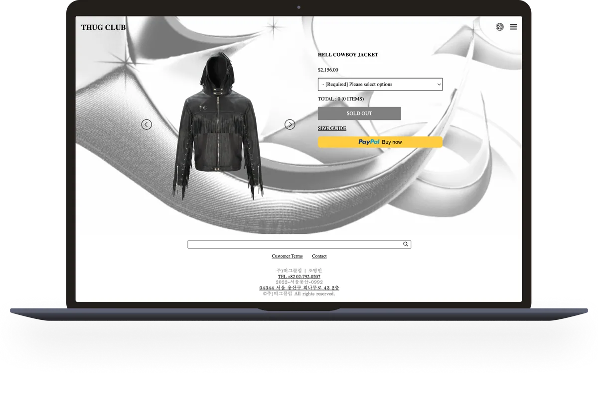
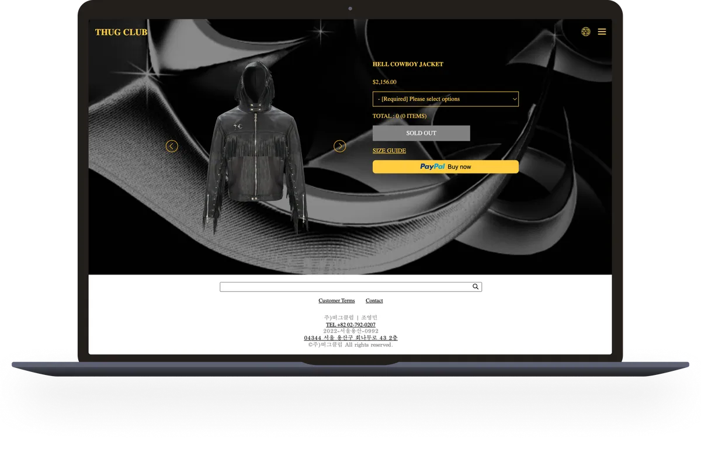
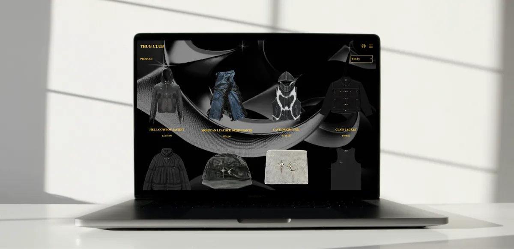

Thug Club Front-end development
- No.
- 06
- Year
- 2025
- Discipline
- UI / Front-end
- Role
- Front-end development, accessibility improvements
- Tools
- HTML, CSS, JavaScript, VS Code
- Features
- Screen-reader support, light & dark mode

A responsive, redesigned website built in HTML, CSS and JavaScript in VS Code.
It incorporates research-backed accessibility improvements, including screen-reader support. Features include dark and light mode options, enhanced readability, and a clean, maintainable code structure.



Looking back
A rebuild of the Thug Club website, and a test of how far I could get with semantic HTML alone: no divs or classes allowed. My accessibility test of the original found missing alt text, several h1s, no skip link and pages you couldn’t tab through.
Along the way I properly learned CSS grid, built my first light and dark mode, and made sure the Korean text in the footer is read out by VoiceOver in Korean. Not everything worked: I never got the animated scroll indicator I had in mind, and swapping product images with :has() is still on my list.